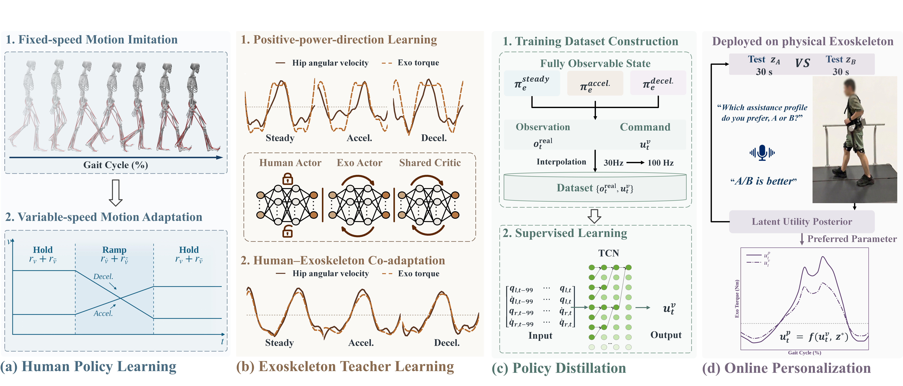
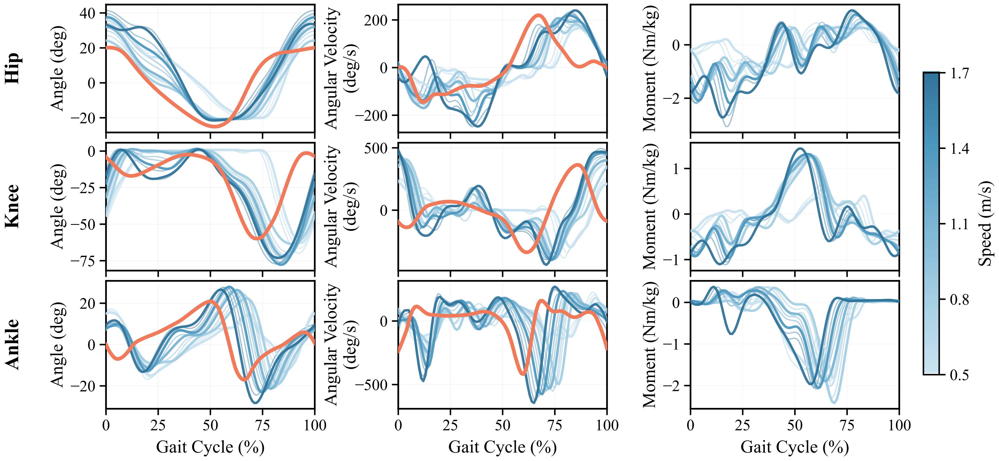
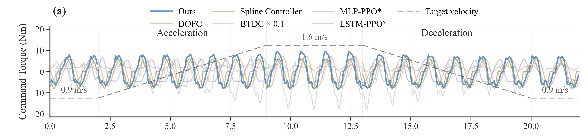
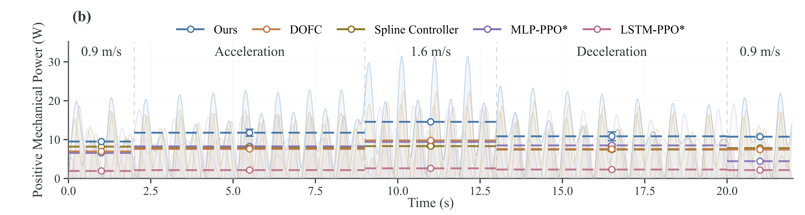
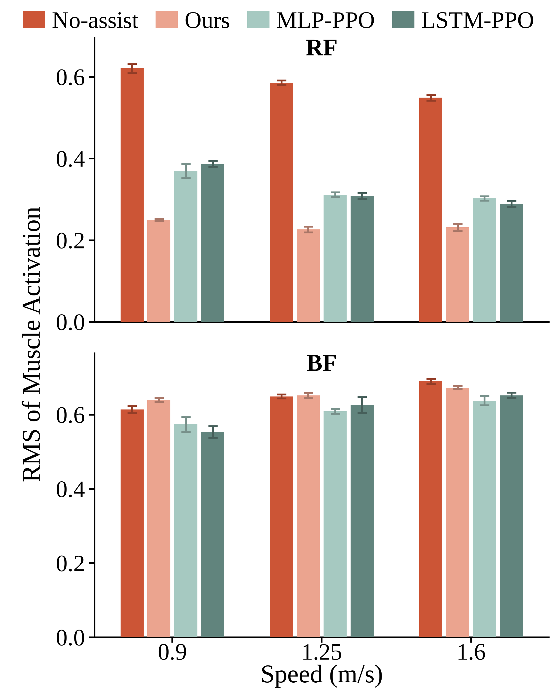
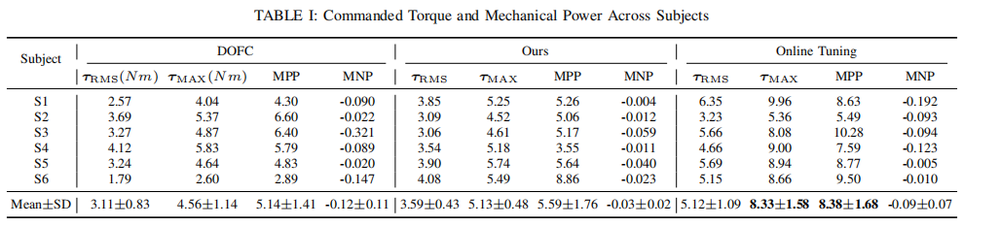
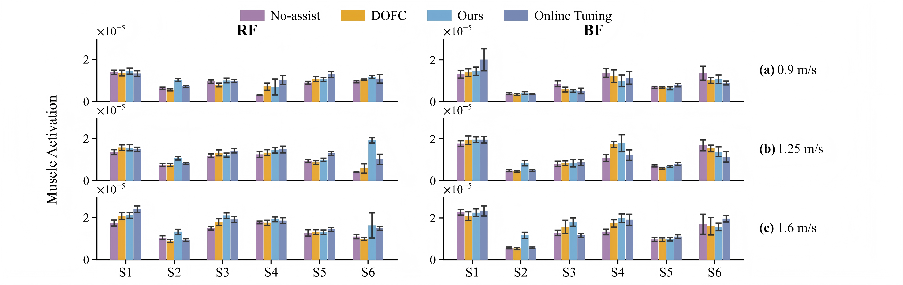
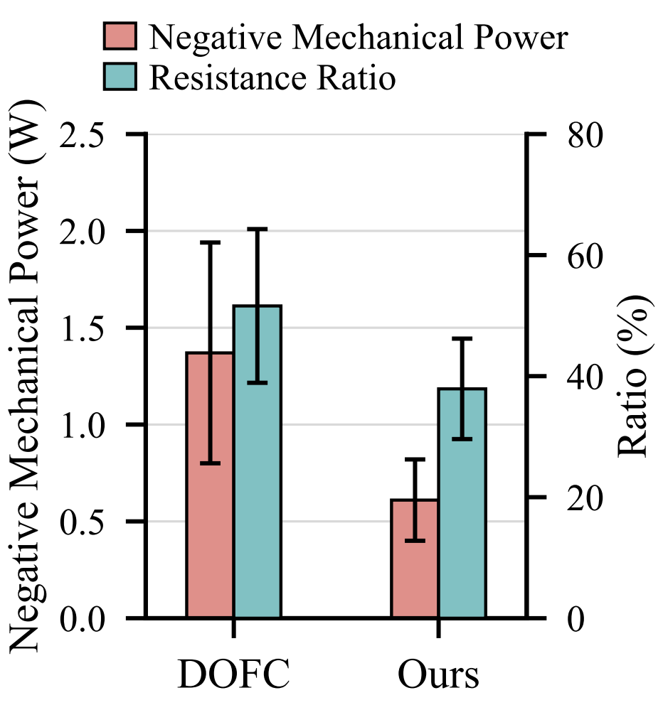

Abstract
Providing personalized exoskeleton assistance across varying walking speeds remains challenging. Existing online optimization methods are sample-inefficient, requiring extensive human-in-the-loop (HIL) evaluations to optimize the entire assistive torque profile. Sim-to-real reinforcement learning (RL) offers a promising alternative but cannot directly account for individual user preferences. We propose a framework integrating sim-to-real RL with online preference learning for personalized exoskeleton assistance. Specifically, assistance timing is learned in simulation by training RL policies with human musculoskeletal models across varying walking speeds. The learned policies are then distilled and deployed on a physical hip exoskeleton using onboard sensory observations. Gaussian-process-based preference learning further personalizes the assistance magnitude through pairwise user comparisons. By decoupling assistance timing learning in simulation from magnitude optimization in real-world experiments, our framework substantially reduces the online optimization space. Human-subject experiments demonstrate efficient identification of personalized assistive torque profiles across varying walking speeds with fewer real-world evaluations.
Overview

Our framework decouples the learning of speed-adaptive assistance timing from subject-specific assistance magnitude, combining simulation-based reinforcement learning with real-world preference optimization.
Human Policy Learning: A context-conditioned human control policy is learned through fixed-speed motion imitation followed by variable-speed motion adaptation. Explicit reference-motion tracking is removed during the second phase, enabling the policy to generate locomotion across continuously varying walking speeds rather than simply reproducing predefined gait trajectories.
Exoskeleton Teacher Learning: Exoskeleton teacher policies are trained through interaction with the learned human musculoskeletal model. Assistance timing is first shaped toward the desired mechanical-power direction and is subsequently refined through human–exoskeleton co-adaptation, allowing the assistance policy to adapt across steady walking, acceleration, and deceleration.
Policy Distillation: The fully observed teacher policies are distilled into a TCN-based student policy that relies only on onboard sensory observations. This bridges the gap between fully observable simulation and the partially observed state available on the physical exoskeleton, enabling real-time deployment using wearable sensing.
Online Personalization: After deployment, the assistance timing learned in simulation is preserved, while only the extension and flexion magnitudes are personalized through pairwise user preferences. This formulation reduces online adaptation to a low-dimensional preference-optimization problem, avoiding re-optimization of the complete assistive torque profile.
Simulation Validation

Speed-adaptive behavior of the learned human motion policy across walking speeds from 0.5 to 1.7 m/s.

Commanded assistive torque over the speed-transition sequence.

Positive mechanical power and gait-level mean positive power during variable-speed walking.

Comparison of RMS muscle activation across assistance methods at 0.9, 1.25, and 1.6 m/s.
Performance of Learned Human Control Policy: The hip, knee, and ankle joint kinematics in the sagittal plane were evaluated across walking speeds ranging from 0.5 m/s to 1.7 m/s. The learned human control policy reproduces speed-adaptive locomotion over the entire evaluated speed range, despite being trained with reference motion only at 1.25 m/s. At the reference speed, the pooled RMSEs across the hip, knee, and ankle were 17.06° for joint angles and 211.93°/s for angular velocities. These deviations should not be interpreted solely as tracking errors, since the RL objective jointly considers motion imitation, walking-speed regulation, muscle effort, and physical constraints, while explicit reference tracking is removed during variable-speed adaptation. Joint-level agreement may also vary due to the joint-specific tracking weights used during the initial imitation stage.
Performance of Learned Assistance Profile: MLP-PPO and LSTM-PPO policies were trained at a fixed walking speed of 1.25 m/s following the authors' implementation. During variable-speed walking, our method adapts torque magnitude with walking speed and yields higher positive mechanical power with torque amplitudes comparable to DOFC and the spline controller, suggesting improved assistance timing. For two representative muscles (RF: Rectus Femoris; BF: Biceps Femoris), the results show that our method consistently reduces RF activation across the evaluated walking speeds.
Experimental Validation
Preference-based personalization of assistance magnitude on the physical hip exoskeleton.


Comparison of muscle activation across assistance methods at three walking speeds.

Negative mechanical power and resistance ratio during free walking.
Treadmill Walking: The performance of each method was evaluated during treadmill walking at 0.9 m/s, 1.25 m/s, and 1.6 m/s. The results show that our method achieves higher positive mechanical power than DOFC. Furthermore, incorporating online personalization further increases positive mechanical power by adapting the assistance magnitude to individual preferences. Muscle activation of RF and BF was also measured and analyzed. Several participants exhibited changes in BF activation that differed from those observed in simulation, suggesting that increased positive mechanical power does not necessarily translate into reduced muscle activation.
Free Walking: Four participants were instructed to walk freely while continuously varying their walking speed at their own pace. For DOFC, the same parameters as those used in simulation were applied to all participants, whereas the individually preferred assistive torque profile was applied for our method. Our method reduced negative mechanical power by 55% (p = 0.030) and the resistance ratio by 27%, despite only a 9% reduction in RMS torque. These disproportionate reductions indicate that the improvement is not merely due to weaker assistance, but to more favorable temporal coordination of assistive torque with human motion.
BibTeX
@misc{li2026learningspeedadaptivehipexoskeleton,
title={Learning a Speed-adaptive Hip Exoskeleton Control Policy Via Sim-to-real Reinforcement Learning},
author={Bin Li and Zhimin Hou and Jiacheng Hou and Zenian Liang and Tong Wu and Teng Ma and Chenglong Fu},
year={2026},
eprint={2609.28027},
archivePrefix={arXiv},
primaryClass={cs.RO},
url={https://arxiv.org/abs/2609.28027},
}